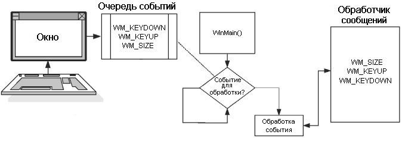

Работа, управляемая событиями
Программы для Windows управляются событиями. Это значит, что
программа, вместо того, чтобы бежать за информацией, может
бездельничать и ждать сообщений, поступающих ей через очередь
сообщений. Все сообщения получает и обрабатывает обработчик
сообщений (message handler). Элементы,
обрабатываемые в обработчике сообщений обычно называются событиями (events).
События
Вы можете задаться вопросом, какие виды событий обрабатываются.
Существуют сотни, если не тысячи возможных событий, и некоторые
из них описаны в таблице 1.
|
Таблица 1. События Windows
|
|
Событие |
Описание |
|
WM_KEYDOWN |
Это событие генерируется
каждый раз, когда нажимается
клавиша на клавиатуре. Ввод с
клавиатуры жизненно необходим
для большинства игр, поэтому
данное сообщение очень важно. |
|
WM_KEYUP |
Это событие генерируется
когда нажатая клавиша будет
отпущена. Вам необходимо знать
не только когда клавишу нажали,
но и когда ее отпустили. Поэтому
данное событие также важно. |
|
WM_LBUTTONDOWN |
Это событие генерируется
когда пользователь нажимает
левую кнопку мыши, если
указатель мыши находится в
пределах окна. |
|
WM_LBUTTONUP |
Это событие генерируется
когда пользователь отпускает
левую кнопку мыши, если
указатель мыши находится в
пределах окна. |
|
WM_SETFOCUS |
Это событие генерируется
когда приложение получает фокус
клавиатуры. Например, событие WM_SETFOCUS генерируется,
когда вы щелкаете мышью по
неактивному окну. |
|
WM_SIZE |
Это событие сообщает окну,
что его размеры были изменены.
Оно важно в ситуациях, когда для
подгонки интерфейса к новому
размеру окна требуется изменение
расположения элементов. |
|
СОВЕТ
Существует множество других событий. Я советую
вам воспользоваться встроенной справкой Visual C#
и поискать описание всех сообщений, названия
которых начинаются с WM_.
Структура программы

Рис. 1. Структура обработки сообщений
Windows
На рис. 1 есть несколько областей, представляющих для нас
интерес. Прежде всего обратите внимание на изображение окна
программы. Под ним нарисована клавиатура, представляющая входные
данные, которые поступают от пользователя.
Очередь событий
Вторая ключевая область называется очередь
событий (event queue). События
помещаются в очередь событий. Почти всегда, когда программа
Windows получает входные данные или уведомление от пользователя
или операционной системы, происходит генерация события, которое
сохраняется в очереди. Программы используют систему очередей,
чтобы сообщения никогда не терялись. Кроме того, сообщение может
храниться в очереди так долго, как требуется программе.
Если программа занята, а пользователь в это время нажимает
клавишу, данные о нажатии могут быть потеряны. Это происходит
потому, что программа была занята чем-то другим и пропустила
данное событие. В Windows сообщение клавиатуры посылается в
очередь событий для хранения. Там оно находится в безопасности,
пока не будет затребовано программой.
События, помещенные в очередь обрабатываются по принципу «первым
пришел — первым ушел (FIFO)». Это означает, что первое
помещенное в очередь событие будет первым вытолкнуто из очереди,
когда программа запросит следующее событие. В этом нет ничего
революционного — всего лишь стандартная очередь.
На рис. 1 в очереди событий содержится три сообщения: WM_KEYDOWN, WM_KEYUP и WM_SIZE.
Для разработчика они представляют три возможных действия
пользователя. Сначала пользователь нажал клавишу и затем
отпустил ее. После этого пользователь изменил размер окна.
Функция WinMain()
Следуя далее мы столкнемся с функцией WinMain().
Как я говорил ранее, она является неотъемлемой частью всех
программ Windows, а также является первой функцией, вызываемой
во время выполнения программы.
На рис. 1 под функцией WinMain() располагается
блок условия с текстом «Событие для обработки?». Он изображает
цикл обработки сообщений, являющийся стандартной частью
большинства приложений для Windows. Обычно после того как вы
инициализировали программу Windows, чтобы она отображала окно и
необходимые кнопки, начинается ожидание событий. В большинстве
случаев в коде программы присутствует тот или иной вид цикла,
проверяющего наличие событий в очереди. На рисунке это
изображено пунктирной линией, ведущей к очереди событий. Цикл
обработки событий проверяет очередь, пока не обнаружит наличие в
ней какой-либо информации.
Как только в очереди найдено событие, оно извлекается и
передается для дальнейшей обработки обработчику сообщений.
Обработчик сообщений
Когда в своей программе вы создаете окно, то должны указать
функцию, которая будет обрабатывать сообщения, поступающие от
этого окна. Эта функция является действительным обработчиком
сообщений. Итак мы пришли к следующему: обработчик сообщений —
это обычная функция, получающая сообщения, направляемые вашей
программе.
Обычно обработчик сообщений представляет собой одну гигантскую
инструкцию switch, проверяющую каждый имеющий отношение к вашей
программе тип сообщений, и затем выполняющую необходимые
действия. Существует множество типов сообщений, которые никогда
не будут докучать вам. Большинство моих игр проверяет только
несколько ключевых типов сообщений.
|